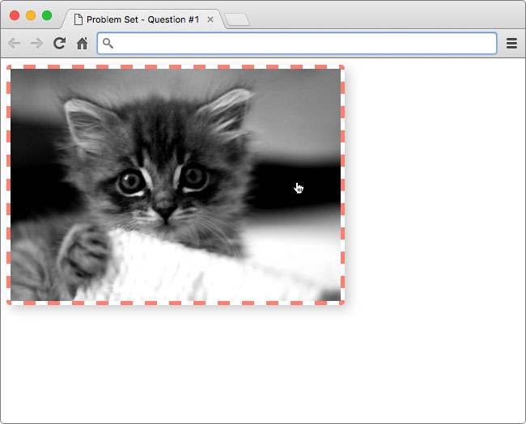
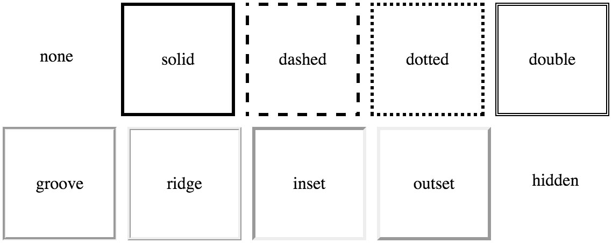

02. Style an Image
Style an Image
Question:
Style an Image
For your first quiz, I want you to take this black and white image of a kitten and add some style to it.

Aww, isn't it cute! 🐱
I'll give you the image and the HTML, and it will be your job to add the style. But, you won't be adding just any style. Instead, you will need to use properties for border, cursor, and box-shadow to produce the following result.

Hint: The color of the border is salmon (#fa8072)
Border
If you've ever used a table in a word processor or spreedsheet, then you should be familiar with borders. With CSS, you can add a border to just about anything. There are a ton of different options for customizing borders like style, width, and color! Click here to learn more.

An example of the different border styles you can achieve with CSS
Cursor
It's possible you've never noticed your cursor change when viewing a website because it's so subtle. But, changing the cursor can be extremely helpful when trying to communicate things to the user. For example, if a user hovers over a link, changing the cursor to a pointer let's the user know the link can be clicked.

A normal button on the left, and the same button while a mouse is hovering over it on the right
For most situations your browser automatically changes the cursor, but you can use the cursor property to override its behavior. See this demo of all the different cursors in action! Obvisouly, this property only applies to users with a mouse 😉 .
Box-Shadow
Use shadows to add a sense of depth to images
The box-shadow property is relatively new to the world of CSS. You can use it to add a shadow to an element. If you want to try experimenting with box-shadows, check out this box-shadow generator from CSSmatic.
How to Complete this Quiz
Edit index.html in the Udacity classroom to replicate the same styling seen in the solution image.

I've already written the selector portion of the code, you just need to fill in the styles.
.kitten-image {
/* add CSS here */
}Click "Skip to Quiz" when you're ready to start.
Image Credit
- 'Kitten' by Nicolas Suzor via Flickr, Creative Commons.
Start Quiz:
Solution:
Here's what I added to .kitten-image :
.kitten-image {
border: 5px dashed salmon;
border-radius: 5px;
cursor: pointer;
box-shadow: 5px 5px 20px #ccc;
}The properties border and border-radius were used to create the border seen in the image. However, you could have split the border property into border-width, border-style, and border-color. My solution is just using the shorthand version instead.
The cursor property was used to change the mouse cursor from its default setting to the pointing finger.
Finally, I added the property box-shadow to produce the drop shadow behind the image.
Here's the before and after:
INSTRUCTOR NOTE:
Important Note:
This quiz is having "interkitten" issues with certain browsers. For the time being, grading has been removed from this quiz. Try your best to complete the exercise and check your answer by viewing the solution.
- James